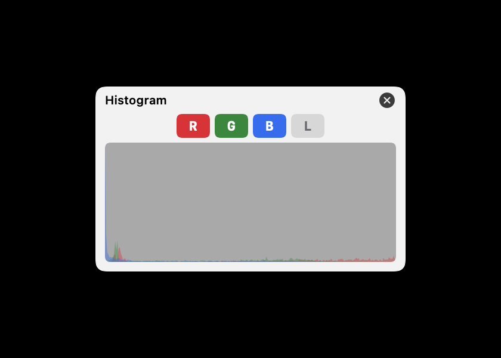
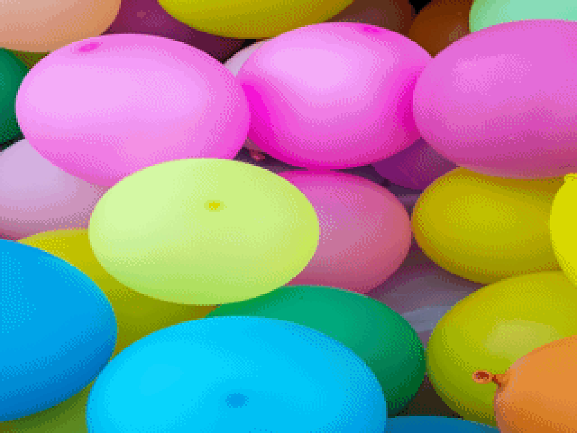
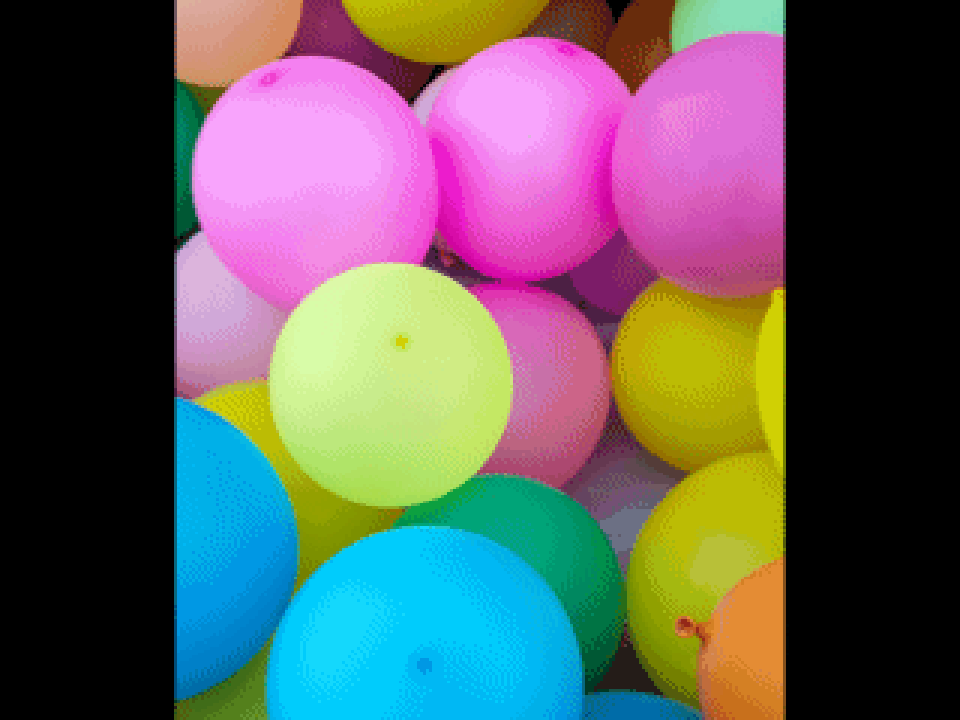
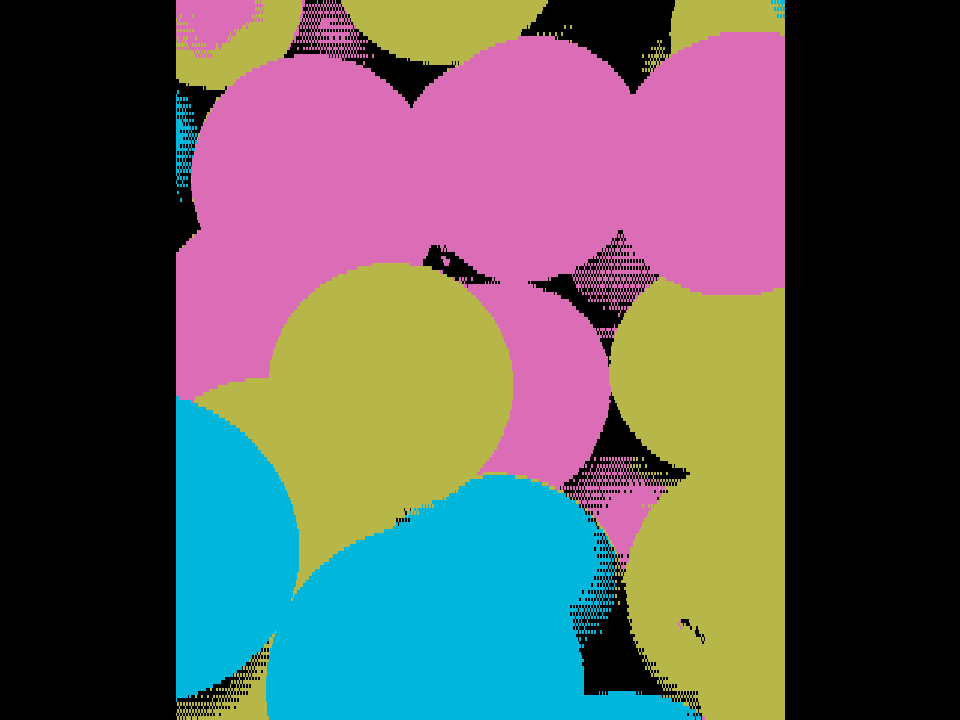
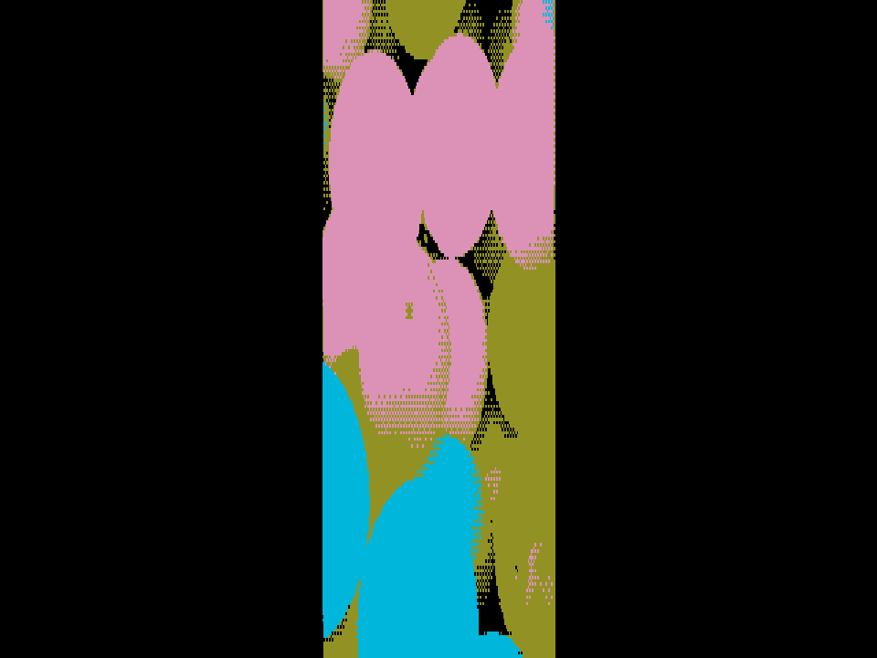

This guide explains how to use BitPast, and lists what it can do: every system it supports, every graphics mode and every setting. It is meant to be read from the beginning, and used afterwards as a reference.
4
Chapter 4
Working with Pictures
Adding, selecting, flipping, framing and locking
This chapter covers everything you can do with a picture before and after it is converted: adding and selecting pictures, looking at the result closely, and choosing how the picture fills the screen.
4.1
Adding pictures
Drag pictures from the Finder into the Image Browser. You can also click + above the browser, Open Images… in the empty browser, or choose File ▸ Open Images… (⌘O), and choose files. File ▸ Open Recent brings back any of the last ten pictures you opened. Add as many as you like: they appear as thumbnails, and the first picture you add is selected automatically.
BitPast opens any picture format macOS can read, such as JPEG, PNG, GIF, TIFF, BMP and HEIC. Adding a picture never changes the original file.
4.2
Selecting and removing pictures
Click a thumbnail to show it in the preview. That is the picture you are working on, and it has a blue frame.
To work on several pictures at once — to save them together, or to put them on a disk — use the small circle at the top right of each thumbnail. Click a circle to select that picture. Hold Shift and click another thumbnail to select every picture between the two. The checkbox above the browser selects or deselects all of them.
Remove
The trash can above the browser removes the selected pictures from BitPast. It does not delete the files from your Mac.
4.3
Looking closely
Zoom
The magnifying-glass buttons at the right end of the preview toolbar change the size of the preview. At 100% the picture is fitted to the space available. The buttons step the magnification by 20% at a time, up to about 500%. When the picture is larger than the preview, scroll to move around it.
Flip
H-Flip mirrors the picture left to right and V-Flip top to bottom. The flip is applied to the original picture before it is converted, so the saved file and any disk image are flipped too — not only the preview. A flipped picture’s button stays lit; click it again to undo the flip. The flip belongs to the picture, so other pictures are not affected, and it stays when you change settings or system.
Histogram
Histogram shows how the red, green and blue values (and, if you wish, the brightness) of the converted picture are spread. It is a good way to see how much of the range a small palette really uses. Click the letters R, G, B and L to show or hide a channel; close the panel with the × at its corner.

Figure 4-1The histogram of a converted picture.
R, G and B show the colour channels; L shows brightness.
R, G and B show the colour channels; L shows brightness.
4.4
Fit, Aspect and position
Your picture and the machine’s screen rarely have the same shape. Fit decides what happens when they differ. It is available for every system.
| Fit | What it does |
|---|---|
| Stretch | Fills the screen and ignores the shape of the picture. This is the default, and the only choice before BitPast 4.6. |
| Contain | Shows the whole picture, with black bars where it does not fill the screen. |
| Cover | Fills the screen and crops whatever sticks out. |
| None | Does not scale at all: one picture pixel for each screen pixel, centred, so you see only the middle part of a large picture. |



Figure 4-2The four choices of Fit, with a tall picture on the Amiga 1200.
Aspect
The pixels of old computers are not square. On an Atari ST in medium resolution, for example, each pixel is much taller than it is wide, because 640 pixels share a screen with only 200 lines. Aspect takes this into account whenever Fit is not Stretch.
With Correct, BitPast assumes the picture is shown on a 4:3 screen and shapes it so circles stay round. With Ignore, it treats the pixels as square. The Aspect control appears only when Fit is Contain, Cover or None.


Figure 4-3Aspect on the Atari ST in medium resolution, with Fit set to Contain.
Choosing which part shows
When Fit is Contain, Cover or None, you can move the picture. Point at the preview: the cursor turns into an open hand. Drag the preview and the picture follows your mouse; when you let go, BitPast converts it again at the new position. Double-click the preview to centre the picture again.
Each picture keeps its own position, and the position is used when you save, when you export several pictures and when you make a disk image. With Stretch there is nothing to move, so dragging does nothing.
Figure 4-4The same picture with Fit set to Cover, at three positions.
Important
Moving a picture converts it again, and so does every other change of settings. On the Apple IIgs, changes made in the palette editor are lost when the picture is converted again, so make them last (Chapter 7).
4.5
Locking settings for one picture
Normally one set of settings applies to every picture. When you want one picture to keep its own settings — a dark photograph that needs more contrast than the others, say — you can lock them.
1
Select the picture and adjust the settings until the preview looks right.
2
Click the padlock above the Image Browser. It turns orange, and the picture keeps these settings.
3
Select another picture and adjust the settings for it; lock that one too if you wish.
4
Save or export. Each locked picture is converted with its own settings; pictures that are not locked use the current settings.
To release a picture, select it and click the orange padlock again. Locked settings belong to the system you were using when you locked them: they apply only to that system, and they are released when you switch to another.
Note
A locked picture does not follow the settings panel. If a slider seems to do nothing, check whether the selected picture is locked.
4.6
Choosing and preparing pictures
- Strong shapes win. The smaller the palette, the more a picture needs clear shapes and contrast. A toucan on a dark background converts better than a distant landscape.
- Crop first, or use Cover. A close crop puts more of the machine’s few pixels on the subject.
- Contrast and saturation are cheap fixes. A flat picture gets muddy in a small palette: try CLAHE contrast and a little extra saturation before anything else.
- Size does not matter. BitPast scales every picture to the machine’s screen, so a large original gives a better result than a small one, never a worse one.
- Compare systems. Converting the same picture for several machines shows quickly which suits it.